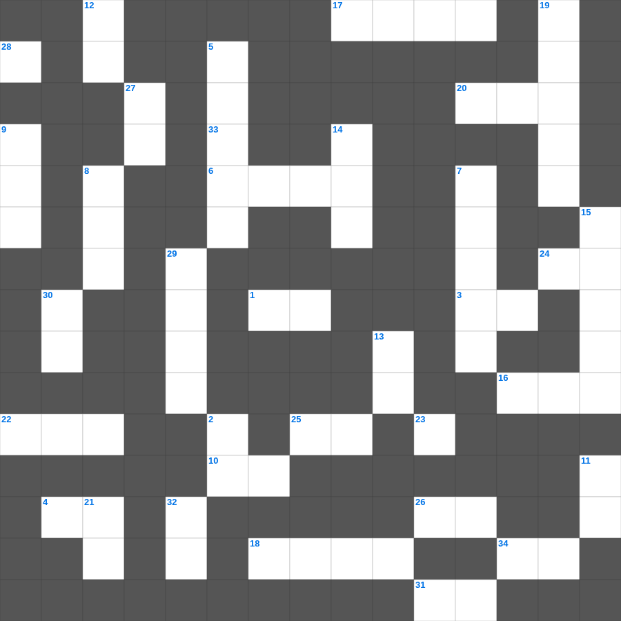

디모데후서 마스터 100
📌 서비스 정의
십자가로세로는 교회 주보와 주일학교에서 사용할 수 있는 성경 기반 가로세로 퍼즐 서비스입니다. 성경 인물, 사건, 핵심 구절을 바탕으로 제작되었습니다. 온라인 풀이 및 인쇄 기능을 제공합니다.
📖 디모데후서란?
디모데후서는 순교를 앞둔 바울이 디모데에게 보낸 마지막 서신으로, 복음을 위해 고난을 감당하고 끝까지 믿음을 지킬 것을 부탁합니다.
📚 디모데후서의 주요 사건·주제
복음을 위한 고난에 동참하라는 권면 · 말씀 사역자의 자세에 대한 가르침 · 말세의 징조에 대한 경고 · 성경의 영감과 유익에 대한 선언 · 바울의 마지막 고백(달려갈 길을 마침)
오늘은 디모데후서의 주요 내용을 담은 디모데후서 성경 퍼즐를 준비했습니다. 총 35개의 힌트가 있으며, 주일학교 교재나 성경공부 자료로 활용하기 좋습니다. 무료로 즐기는 디모데후서 가로세로 퍼즐을 지금 바로 풀어보세요!

📝 가로 힌트
1. 귀신들의 이름이 무엇이냐 물으신즉 이르되 내 이름은 이것이니 우리가 많음이니이다
3. 곡아 네가 네 고토에서 광명한 날에 구름이 땅을 덮음 같이 내 백성 이스라엘을 이것 하러 오리라
4. 빠른 경주자들이라고 선착하는 것이 아니며 이것들이라고 전쟁에 승리하는 것이 아니며
6. 하나님이 자기 이름을 두시려고 택하실 장소
10. 형제들아 자는 자들에 관하여는 너희가 알지 못함을 우리가 원하지 아니하노니 이는 소망 없는 다른 이와 같이 이것하지 않게 하려 함이라
13. 이것은 어떤 모양이라도 버리라
16. 하나님을 이것하라 그리하면 너희를 가까이하시리라
17. 전도자가 이르되 헛되고 헛되며 헛되고 헛되니 모든 것이 이것이로다
18. 오직 사랑 안에서 참된 것을 하여 범사에 그에게까지 자랄지라 그는 머리니 곧 이것이라
20. 삼손의 아버지 이름
22. 기드온의 군대 중 물을 핥아 먹어 선발된 인원
24. 오직 하나님의 능력을 따라 복음과 함께 이것을 받으라
25. 아비야 왕이 전쟁 중 하나님께 부르짖을 때 제사장들이 분 것
26. 바울과 바나바가 마가 요한을 데리고 가는 문제로 심히 다투어 갈라선 선교 여행 차수
31. 하나님은 교만한 자를 대적하시되 겸손한 자들에게는 이것을 주시느니라
33. 진실하여 허물 없이 그리스도의 날까지 이르고 예수 그리스도로 말미암아 이것의 열매가 가득하여
34. 여리고를 정복할 때 외친 것
📝 세로 힌트
2. 네 넓적다리는 둥글어서 숙련공의 손이 만든 이것 꿰미 같구나
5. 에스더가 왕 앞에 나갈 때 입은 옷
7. 나아만 장군이 요단강에 일곱 번 씻음
8. 라합이 살던 성읍의 이름
9. 헤스본 왕 시혼을 이기고 얻은 땅
11. 누구든지 여호와의 이름을 부르는 자는 이것을 얻으리니
12. 무리가 그들의 칼을 쳐서 이것을 만들고 그들의 창을 쳐서 낫을 만들 것이며
13. 애굽의 가축들이 다 죽은 다섯 번째 재앙
14. 요셉의 채색옷에 묻힌 피
15. 언약궤 안에 들어있는 아론의 물건
19. 만왕의 왕이시며 만주의 주시요 오직 그에게만 이것이 있고
21. 형제 사랑에 관하여는 너희에게 쓸 것이 없음은 너희 자신이 하나님의 가르치심을 받아 서로 이것함이라
23. 오직 내가 잡힌 바 된 그것을 잡으려고 달려가노라... 오직 한 일 즉 뒤에 있는 것은 잊어버리고 이것에 있는 것을 잡으려고
27. 내가 이와 같이 여러 나라의 눈에 내 존대함과 내 이것함을 나타내어 나를 알게 하리니
28. 나 여호와가 말하노라 그날 그때에는 이스라엘의 죄악을 찾을지라도 이것겠고
29. 나오미와 룻이 돌아온 고향 성읍
30. 천사장의 소리와 하나님의 이것 소리로 친히 하늘로부터 강림하시리니
32. 우리가 사랑함은 그가 이것 우리를 사랑하셨음이라
🧩 이 퍼즐에서 배우는 내용
이 퍼즐은 디모데후서 마스터 100의 핵심 단어와 개념을 자연스럽게 복습할 수 있도록 구성되었습니다. 주일학교 수업이나 개인 성경공부에서 학습 내용을 점검하는 용도로 바로 활용할 수 있습니다.
🧑🏫 교회 교육 자료 활용
이 퍼즐은 주일학교 교재 추천 자료로 활용할 수 있고, 주일학교 주보에 넣기 좋은 분량으로 구성되어 있습니다. 수업용 주일학교 교안에 활동지로 붙이거나, 예배 후 복습용 주일학교 공과교재로 바로 사용할 수 있습니다.
🏷️ 키워드
디모데후서 성경 퍼즐, 디모데후서, 십자가로세로, 성경퀴즈, 말씀퀴즈, 가로세로퍼즐, 주일학교 교재 추천, 주일학교 주보, 주일학교 교안, 주일학교 공과교재